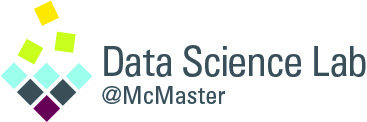

Fei Chiang is an Associate Professor in the Department of Computing and Software (Faculty of Engineering), the Director of the Data Science Research Group, and a Faculty Fellow at the IBM Centre for Advanced Studies. She served as an inaugural Associate Director of the MacData Institute. Her research interests and industrial experience is in data management, spanning data quality, data profiling, temporal graphs, and database systems. She holds four patents for her work in self-managing database systems. She has received an Ontario Early Researcher Award (2018), and VLDB Distinguished Reviewer Award (2023). She received her M. Math from the University of Waterloo, and B.Sc and PhD degrees from the University of Toronto, all in Computer Science.
